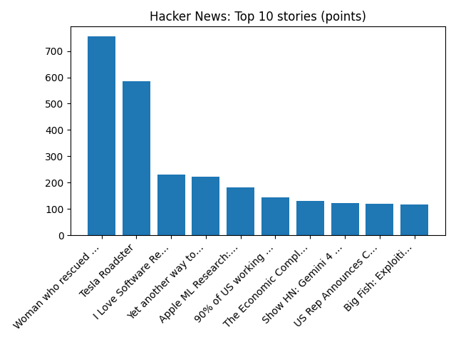

YOUR DAILY INTELLIGENCE BRIEF · 2026-10-16
The world, in focus.
No recent news coverage available.
🌍 Global coverage
🌌 Beyond Earth
Chasing the International Space Station
📜 On this day
- 2017 Storm Ophelia strikes the U.K. and Ireland causing major damage and power loss.
- 2013 Lao Airlines Flight 301 crashes on approach to Pakse International Airport in Laos, killing 49 people.
- 2002 The Bibliotheca Alexandrina opens in Egypt, commemorating the ancient library of Alexandria.
- 1999 The magnitude 7.1 Hector Mine earthquake strikes Southern California
📈 Topic activity
Source health: 24/24 healthy
View original detailed report
Daily Knowledge Garden — 2026-10-16
🧭 Daily Summary
Global coverage includes Oregon teacher fought school attacker before armed dad shot suspect 'multiple times'; Trial of German steakhouse heiress that sparked a huge spy scandal; Teacher tackled and fought Oregon school shooter - Reuters. Local coverage includes Northern Virginia HomeSchool vs Manassas Park live: Northern Virginia HomeSchool vs Manassas Park look to seize control of thrilling Northern Virginia HomeSchool vs Manassas Park. Every team in the Northern Virginia HomeSchool vs Manassas Park has - Universidad de Córdoba (UCO); These 16-year-old students are protecting the environment from data centers - NBC4 Washington.
🌍 Global News (cross-source)
- Oregon teacher fought school attacker before armed dad shot suspect 'multiple times' — BBC — World
- Trial of German steakhouse heiress that sparked a huge spy scandal — BBC — World
- Teacher tackled and fought Oregon school shooter - Reuters — Reuters — World (Google News)
- Multiple Southern California homes are ablaze in a fast-moving wildfire fueled by hot, windy weather - AP News — AP — Headlines (Google News)
- Wall Street tumbles as worries about AI trade and high oil prices weigh - Reuters — Reuters — Business (Google News)
🏙️ Local News
- Northern Virginia HomeSchool vs Manassas Park live: Northern Virginia HomeSchool vs Manassas Park look to seize control of thrilling Northern Virginia HomeSchool vs Manassas Park. Every team in the Northern Virginia HomeSchool vs Manassas Park has - Universidad de Córdoba (UCO) — Google News — Northern Virginia
- These 16-year-old students are protecting the environment from data centers - NBC4 Washington — Google News — Northern Virginia
- Amtrak and VRE closures to last 9 days between DC and Virginia - NBC4 Washington — Google News — Northern Virginia
- Edsall Road eastbound ramp to I-395 northbound narrowing Oct. 19-23 - Virginia Department of Transportation (.gov) — Google News — Northern Virginia
- Half of N. Va.’s 10 best restaurants are in Fairfax, Northern Virginia Magazine says - FFXnow — Google News — Northern Virginia
🚀 Hacker News (Top 5)
- Muse Spark Open — 860 points, 428 comments
- Neural networks are clean — 750 points, 286 comments
- Wayland desktop for Linux with skeuomorphic design — 647 points, 265 comments
- What I self-host — 570 points, 354 comments
- Woman who rescued injured crow keeps getting 'thank-you gifts' from birds [video] — 551 points, 169 comments

🌍 Wikipedia — On This Day (selected)
- 2017 — Storm Ophelia strikes the U.K. and Ireland causing major damage and power loss.
- 2013 — Lao Airlines Flight 301 crashes on approach to Pakse International Airport in Laos, killing 49 people.
- 2002 — The Bibliotheca Alexandrina opens in Egypt, commemorating the ancient library of Alexandria.
- 1999 — The magnitude 7.1 Hector Mine earthquake strikes Southern California
- 1998 — Former Chilean dictator Augusto Pinochet is arrested in London on a murder extradition warrant.
🎲 Wikipedia — Random Article
Casa Martí
The building has not been preserved in its entirety. The original lintel of the door by Puig i Cadafalch disappeared in one of the modifications that the building has undergone in its more than one hundred years of history.
https://en.wikipedia.org/wiki/Casa_Mart%C3%AD
🌌 NASA APOD
Chasing the International Space Station
Feed Health
- Reuters — Headlines (Google News): ok (15 articles)
- Reuters — World (Google News): ok (15 articles)
- Reuters — Business (Google News): ok (15 articles)
- BBC — World: ok (15 articles)
- BBC — Tech: ok (15 articles)
- BBC — Business: ok (15 articles)
- BBC — Science: ok (15 articles)
- AP — Headlines (Google News): ok (15 articles)
- AP — Politics (Google News): ok (15 articles)
- AP — Business (Google News): ok (15 articles)
- NPR — Top Stories: ok (10 articles)
- NPR — Politics: ok (10 articles)
- NPR — Business: ok (10 articles)
- NPR — Science: ok (10 articles)
- NPR — Technology: ok (10 articles)
- ScienceNews: ok (15 articles)
- ScienceDaily — Top: ok (15 articles)
- Nature — Technology: ok (15 articles)
- Google News — Northern Virginia: ok (15 articles)
- Google News — Northern Virginia traffic: ok (15 articles)
- Google News — Northern Virginia weather: ok (15 articles)
- Wikipedia — On This Day: ok (10 articles)
- Wikipedia — Random: ok (1 articles)
- NASA — APOD: ok (1 articles)
Runs so far today: 3